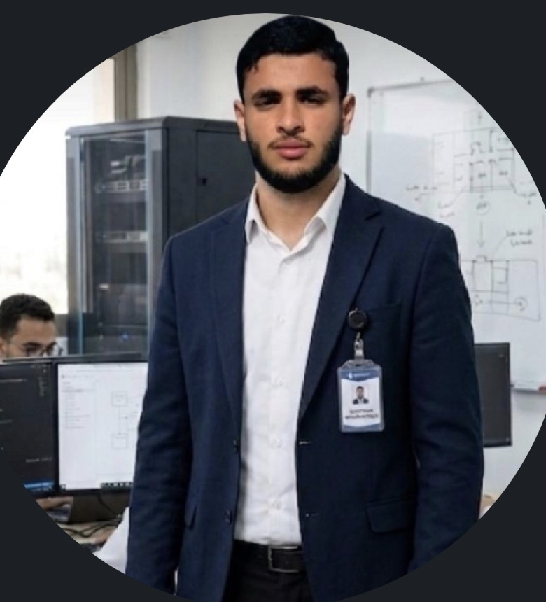

1st Year Computer Science Student & Web Developer
FR Étudiant en 1ère Année Informatique & Développeur Web
DE Informatikstudent im 1. Jahr & Webentwickler
19 years old, from Tunisia. Currently in my 1st year of Licence Informatique at ISIG Kairouan. I am building myself, building a strong profile, and learning new technologies every day.
FR 19 ans, de Tunisie. Actuellement en 1ère année de Licence Informatique à l'ISIG Kairouan. Je me construis, je construis un profil solide, et j'apprends de nouvelles technologies chaque jour.
DE 19 Jahre alt, aus Tunesien. Derzeit im 1. Jahr der Licence Informatique an der ISIG Kairouan. Ich baue mich selbst auf, baue ein starkes Profil auf und lerne jeden Tag neue Technologien.
FR À propos de moi
DE Über mich
Hello! I am Mortadha Baazaoui, 19 years old, from Tunisia.
FR Bonjour ! Je suis Mortadha Baazaoui, 19 ans, de Tunisie.
DE Hallo! Ich bin Mortadha Baazaoui, 19 Jahre alt, aus Tunesien.
I am in my 1st year of Licence Informatique at ISIG Kairouan. I am still at the beginning, but I am building myself every day.
FR Je suis en 1ère année de Licence Informatique à l'ISIG Kairouan. Je suis encore au début, mais je me construis chaque jour.
DE Ich bin im 1. Jahr der Licence Informatique an der ISIG Kairouan. Ich bin noch am Anfang, aber ich baue mich jeden Tag auf.
I love web development. I love creating beautiful websites and learning something new every day.
FR J'aime le développement web. J'aime créer de beaux sites web et apprendre quelque chose de nouveau chaque jour.
DE Ich liebe Webentwicklung. Ich liebe es, schöne Webseiten zu erstellen und jeden Tag etwas Neues zu lernen.
From: Tunisia
FR Origine : Tunisie
DE Herkunft: Tunesien
Now: 1st Year Student at ISIG Kairouan
FR Actuellement : Étudiant en 1ère Année à l'ISIG Kairouan
DE Aktuell: Student im 1. Jahr an der ISIG Kairouan
Degree: Licence Informatique
FR Diplôme : Licence Informatique
DE Abschluss: Licence Informatique
Languages: Arabic, French, English
FR Langues : Arabe, Français, Anglais
DE Sprachen: Arabisch, Französisch, Englisch
FR Mes Compétences
DE Meine Fähigkeiten
Technologies I use to build amazing things
Clean, modern and responsive design that works perfectly on phone and computer.
FR Design propre, moderne et responsive qui fonctionne parfaitement sur téléphone et ordinateur.
DE Sauberes, modernes und responsives Design, das auf Handy und Computer perfekt funktioniert.
I make websites interactive and alive with animations, buttons and dynamic features.
FR Je rends les sites web interactifs et vivants avec des animations, des boutons et des fonctionnalités dynamiques.
DE Ich mache Webseiten interaktiv und lebendig mit Animationen, Buttons und dynamischen Funktionen.
Strong foundation in programming, algorithms and problem solving from my studies at ISIG.
FR Solide base en programmation, algorithmes et résolution de problèmes grâce à mes études à l'ISIG.
DE Starke Grundlagen in Programmierung, Algorithmen und Problemlösung durch mein Studium an der ISIG.
FR Mon Projet
DE Mein Projekt
I am the project - I am building myself
FR Je Suis Le Projet - Je Construis Un Profil Solide
DE Ich Bin Das Projekt - Ich Baue Ein Starkes Profil Auf
I am currently in my 1st year of Licence Informatique at ISIG Kairouan. I am like a project - I am building myself, building a strong profile, day by day.
FR Je suis actuellement en 1ère année de Licence Informatique à l'ISIG Kairouan. Je suis comme un projet - je me construis, je construis un profil solide, jour après jour.
DE Ich bin derzeit im 1. Jahr der Licence Informatique an der ISIG Kairouan. Ich bin wie ein Projekt - ich baue mich selbst auf, baue ein starkes Profil auf, Tag für Tag.
My plan: I will finish my Licence here in Tunisia, then I will do 2 years of Master Abroad to learn more, gain international experience and work on bigger projects.
FR Mon plan : Je vais terminer ma Licence ici en Tunisie, puis je vais faire 2 ans de Master à l'étranger pour apprendre davantage, acquérir une expérience internationale et travailler sur de plus grands projets.
DE Mein Plan: Ich werde meine Licence hier in Tunesien abschließen, dann werde ich 2 Jahre Master im Ausland machen, um mehr zu lernen, internationale Erfahrung zu sammeln und an größeren Projekten zu arbeiten.
This is not now - this is my goal for the future. And I am working on it every day: learning, building projects, and improving my English and French.
FR Ce n'est pas maintenant - c'est mon objectif pour l'avenir. Et je travaille dessus chaque jour : apprendre, créer des projets, et améliorer mon anglais et mon français.
DE Das ist nicht jetzt - das ist mein Ziel für die Zukunft. Und ich arbeite jeden Tag daran: lernen, Projekte erstellen und mein Englisch und Französisch verbessern.
FR Étape 1 : Licence - ISIG Kairouan (Maintenant - 1ère Année) | Étape 2 : 2 Ans de Master à l'Étranger (Futur) | Étape 3 : Carrière Internationale
DE Schritt 1: Licence - ISIG Kairouan (Jetzt - 1. Jahr) | Schritt 2: 2 Jahre Master im Ausland (Zukunft) | Schritt 3: Internationale Karriere
FR Travaillons Ensemble !
DE Lasst uns zusammenarbeiten!
Do you have a project? Do you want a website like this one? Send me a message now!
FR Vous avez un projet ? Vous voulez un site web comme celui-ci ? Envoyez-moi un message maintenant !
DE Hast du ein Projekt? Möchtest du eine Webseite wie diese? Schick mir jetzt eine Nachricht!
Contact MeTunisia - 19 Years Old - 1st Year Student at ISIG Kairouan
Tunisie - 19 Ans - Étudiant en 1ère Année à l'ISIG Kairouan / Tunesien - 19 Jahre Alt - Student im 1. Jahr an der ISIG Kairouan